내용 목차
- 5.1. 개요
- 5.2. tbESQL/COBOL 문장 문법
- 5.3. tbESQL/COBOL 문장 공통 문법
- 5.4. tbESQL/COBOL 문장 목록
- 5.4.1. ALLOCATE DESCRIPTOR
- 5.4.2. CLOSE
- 5.4.3. COMMIT
- 5.4.4. CONNECT
- 5.4.5. DEALLOCATE DESCRIPTOR
- 5.4.6. DECLARE CURSOR
- 5.4.7. DECLARE DATABASE
- 5.4.8. DELETE
- 5.4.9. DESCRIBE
- 5.4.10. DESCRIBE DESCRIPTOR
- 5.4.11. EXECUTE
- 5.4.12. EXECUTE DESCRIPTOR
- 5.4.13. EXECUTE IMMEDIATE
- 5.4.14. FETCH
- 5.4.15. FETCH DESCRIPTOR
- 5.4.16. GET DESCRIPTOR
- 5.4.17. INSERT
- 5.4.18. OPEN
- 5.4.19. PREPARE
- 5.4.20. ROLLBACK
- 5.4.21. SAVEPOINT
- 5.4.22. SELECT
- 5.4.23. SET DESCRIPTOR
- 5.4.24. UPDATE
- 5.4.25. WHENEVER
본 장에서는 tbESQL/COBOL 프로그램에서 데이터베이스 처리를 위해 사용하는 tbESQL/COBOL 문장을 설명한다.
tbESQL/COBOL 프로그램은 COBOL 언어의 소스 코드와 tbESQL/COBOL 문장이 혼합되어 있다. tbESQL/COBOL 문장(tbESQL/COBOL Statement)은 tbESQL/COBOL 프로그램 내에서 SQL 질의, 로우의 삽입과 갱신, 제거 등과 같은 데이터베이스와 관련된 처리를 하는 문장을 말한다.
tbESQL/COBOL 문장은 크게 다음과 같이 두 가지로 구성된다.
다음은 tbESQL/COBOL 문장의 문법을 나타내는 그림이다.
[그림 5.1]을 기준으로 tbESQL/COBOL 문장의 문법을 해석하는 방법은 다음과 같다.
| 항목 | 설명 |
|---|---|
| 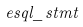 | tbESQL/COBOL 문장의 문법을 대표하는 이름은 왼쪽 위에 나타낸다. (예: esql_stmt) |
| 타원 안의 포함되는 문자는 키워드(Keyword)이며, 반드시 tbESQL/COBOL 문장 내에 포함되어 있어야 한다. (예: EXEC SQL, STMT) | |
| 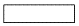 | 사각형 안의 문자는 tbESQL/COBOL 문장에 포함된 문법의 구성요소이며, 구성요소에 맞는 적절한 문자열로 바꾸어야 한다. (예: option, param, choice1, choice2) |
| 원 안의 문자는 tbESQL/COBOL 문장의 기호이며, 반드시 tbESQL/COBOL 문장 내에 포함되어 있어야 한다. (예: 소괄호(( )), 콤마(,)) | |
| 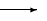 | tbESQL/COBOL 문장을 완성하는 순서는 화살표를 따라가면 된다. 여러 갈래로 갈라지면서 순방향으로 이동하는 화살표는 두 가지 형태로 띈다. [그림 5.1]에서 option은 포함되거나 포함되지 않은 경우이며, choice1, choice2는 여러 가지 중에 하나만이 tbESQL/COBOL 문장에 포함되어야 하는 경우이다. 또는 역방향으로 이동하는 화살표는 포함되지 않거나 한번 이상 포함되는 경우이다. [그림 5.1]에서 콤마(,)에 해당되며, param은 반드시 한번 이상 포함되어야 한다. |
다음의 tbESQL/COBOL 문장은 [그림 5.1]에 따라 모두 유효한 예이다.
EXEC SQL STMT (param) choice1 END-EXEC. EXEC SQL STMT option (param, param) choice1 END-EXEC. EXEC SQL STMT (param, param) choice2 END-EXEC.
본 절에서는 tbESQL/COBOL 문장에서 공통적으로 자주 사용되는 부분을 설명한다.
AT 절은 이름이 있는 데이터베이스 연결을 사용해 tbESQL/COBOL 문장을 수행할 때 사용한다.
AT의 세부 내용은 다음과 같다.
-
문법
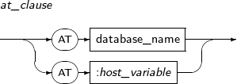 -
구성요소
구성요소 설명 database_name 사용할 데이터베이스의 이름을 명시한다. 여러 개의 데이터베이스 접속을 구분하여 관리하고 싶을 때 database_name을 사용한다.
데이터베이스의 이름은 DECLARE DATABASE를 사용해 미리 선언되어 있어야 한다. 만약 선언되어 있지 않은 이름을 사용할 경우 에러가 발생한다.
:host_variable 사용할 데이터베이스의 이름이 저장된 호스트 변수를 명시한다.
데이터베이스의 이름은 미리 선언되어 있어야 한다.
FOR 절은 tbESQL/COBOL 문장을 반복해서 수행할 필요가 있을 때 사용한다.
FOR 절의 세부 내용은 다음과 같다.
-
문법
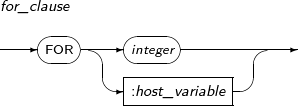 -
구성요소
구성요소 설명 integer 반복 횟수를 명시한다. :host_variable 반복 횟수가 저장된 호스트 변수를 명시한다.
호스트 변수는 int 등의 숫자를 저장할 수 있는 타입이면 된다.
DESCRIPTOR 이름은 Dynamic SQL을 사용할 때 필요한 DESCRIPTOR를 가리키는 이름이다.
DESCRIPTOR 이름은 프리컴파일러 옵션 즉 MODE, DYNAMIC의 값에 따라 다음과 같이 사용될 수 있다.
| 옵션 값 | 설명 |
|---|---|
| ANSI | ansi_descriptor_name이 사용된다. |
| ANSI 외 | normal_descriptor_name이 사용된다. |
DESCRIPTOR 이름의 세부 내용은 다음과 같다.
-
문법
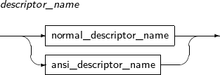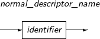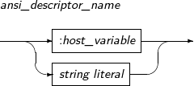 -
구성요소
-
descriptor_name
구성요소 설명 normal_descriptor_name MODE가 TIBERO(ORACLE)일 때 사용한다. ansi_descriptor_name MODE가 ANSI(ISO)일 때 사용한다. -
normal_descriptor_name
구성요소 설명 identifier 서술자의 이름을 정의한 식별자이다. -
ansi_descriptor_name
구성요소 설명 :host_variable 서술자의 이름이 저장된 호스트 변수를 명시한다.
호스트 변수는 CHAR* 또는 CHAR ARRAY 타입 등의 문자열을 저장할 수 있는 타입이다.
string literal 서술자의 이름을 작은따옴표(' ')로 감싸서 사용한다.
-
본 절에서는 Tibero에서 제공하는 tbESQL/COBOL 문장을 알파벳 순으로 설명한다. 단, 각 tbESQL/COBOL 문장의 구성요소를 설명할 때 키워드는 특별한 경우가 아니면 설명하지 않는다.
다음은 tbESQL/COBOL 문장을 요약한 목록이다.
-
실행문장
tbESQL/COBOL문장 설명 ALLOCATE DESCRIPTOR 서술자에 메모리를 할당한다. CLOSE 커서를 닫고 더 이상 사용하지 않는다. COMMIT 트랜잭션을 커밋한다. CONNECT Tibero의 데이터베이스에 접속한다. DEALLOCATE DESCRIPTOR 서술자에 할당된 메모리를 해제한다. DELETE 로우를 삭제한다. EXECUTE 준비된 Dynamic SQL 문장을 실행한다. EXECUTE DESCRIPTOR 준비된 Dynamic SQL 문장을 실행한다. (ANSI) EXECUTE IMMEDIATE Dynamic SQL 문장을 바로 실행한다. FETCH 커서를 이용하여 다음 로우를 읽는다. FETCH DESCRIPTOR 커서를 이용하여 다음 로우를 읽는다. (ANSI) GET DESCRIPTOR 지정한 서술자에서 원하는 정보를 가져온다. INSERT 로우를 삽입한다. OPEN 커서를 열고 연관된 SQL 문장을 실행한다. PREPARE Dynamic SQL 문장을 준비한다. ROLLBACK 트랜잭션에 롤백을 수행한다. SAVEPOINT 저장점(Savepoint)을 설정한다. SELECT SQL 질의를 수행한다. UPDATE 로우를 갱신한다. -
지시어
tbESQL/COBOL 문장 설명 DECLARE CURSOR SQL 문장과 연관된 커서를 선언한다. DECLARE DATABASE 새로운 데이터베이스 접속을 선언한다. DESCRIBE 서술자를 초기화한다. DESCRIBE DESCRIPTOR 서술자에 호스트 변수의 정보를 저장한다. SET DESCRIPTOR 지정한 서술자에 사용자가 입력해야 할 정보를 쓴다. WHENEVER 에러가 발생했을 때 해당 에러에 대한 처리 방법을 지정한다.
ALLOCATE DESCRIPTOR는 서술자에 메모리를 할당할 때 사용하는 문장이다. 단, 이 문장은 ANSI 타입의 Dynamic SQL 문장에만 사용할 수 있다.
ALLOCATE DESCRIPTOR의 세부 내용은 다음과 같다.
-
문법
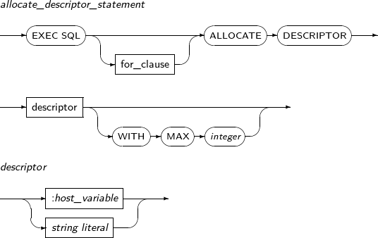 -
구성요소
-
allocate_descriptor_statement
구성요소 설명 for_clause 반복 횟수를 지정한다. 자세한 내용은 “5.3.2. FOR 절”을 참고한다. descriptor 서술자의 이름이 저장된 호스트 변수나 문자열을 명시한다. WITH MAX integer 사용할 호스트 변수의 최대 개수를 지정한다. (기본값: 100) -
descriptor
구성요소 설명 :host_variable 서술자의 이름이 저장된 호스트 변수를 명시한다.
호스트 변수는 CHAR* 또는 CHAR ARRAY 타입 등의 문자열을 저장할 수 있는 타입이다.
string literal 서술자의 이름이 저장된 문자열을 명시한다.
-
-
예제
다음은 ALLOCATE DESCRIPTOR를 사용하는 예이다.
EXEC SQL ALLOCATE DESSCRIPTOR 'IN-DESC' END-EXEC. EXEC SQL ALLOCATE DESSCRIPTOR 'OUT-DESC' END-EXEC.
CLOSE는 커서를 닫을 때 사용하는 문장이다. 이 문장은 현재 열려 있는 커서에만 사용할 수 있다. 커서를 닫으면 커서를 생성할 때 할당되었던 모든 시스템 리소스가 반환된다.
CLOSE의 세부 내용은 다음과 같다.
-
문법
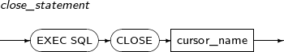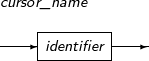 -
구성요소
-
close_statement
구성요소 설명 cursor_name 닫으려는 커서의 이름을 명시한다. -
cursor_name
구성요소 설명 identifier 커서의 이름을 정의한 식별자이다.
-
-
예제
다음은 CLOSE를 사용하는 예이다.
EXEC CLOSE EMP-CURSOR END-EXEC.
COMMIT은 현재 진행 중인 트랜잭션을 커밋하고 트랜잭션에 의해 갱신된 모든 내용을 데이터베이스에 반영할 때 사용하는 문장이다.
COMMIT의 세부 내용은 다음과 같다.
-
문법
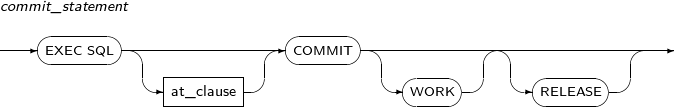 -
구성요소
구성요소 설명 at_clause 커밋을 실행할 데이터베이스를 명시한다.
데이터베이스의 이름을 직접 명시할 수도 있고, 데이터베이스의 이름이 저장된 호스트 변수를 명시할 수도 있다. 자세한 내용은 “5.3.1. AT 절”을 참고한다.
WORK 기존 ESQL 프로그램과의 호환성을 위한 키워드이며 특별한 의미는 없다. RELEASE 모든 리소스를 반환하고 데이터베이스 접속을 종료한다. -
예제
다음은 COMMIT을 사용하는 예이다.
EXEC SQL COMMIT END-EXEC. EXEC SQL COMMIT WORK RELEASE END-EXEC.
CONNECT는 데이터베이스에 접속할 때 사용하는 문장이다. 이 문장을 사용할 때는 사용자 이름과 패스워드를 반드시 명시해야 한다. 데이터베이스 관리자(DBA: Database Administrator, 이하 DBA)로 접속할 수도 있다.
CONNECT의 세부 내용은 다음과 같다.
-
문법
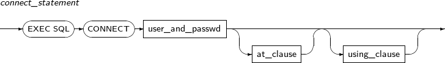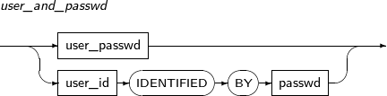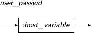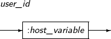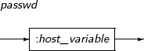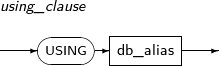 -
구성요소
-
connect_statement
구성요소 설명 user_and_passwd 사용자 이름과 패스워드를 명시한다. at_clause 접속할 데이터베이스를 명시한다.
데이터베이스의 이름을 직접 명시할 수도 있고, 데이터베이스의 이름이 저장된 호스트 변수를 명시할 수도 있다. 자세한 내용은 “5.3.1. AT 절”을 참고한다.
using_clause 데이터베이스의 별칭을 명시한다. -
user_and_passwd
구성요소 설명 user_password 사용자 이름과 패스워드를 명시한다.
사용자 이름과 패스워드의 중간에 슬래시(/)를 포함해 하나의 문자열로 표현한다. (예: 'tibero/tibero')
user_id 사용자 이름을 명시한다. 호스트 변수이며, 문자열이 직접 올 수 없다. passwd 패스워드를 명시한다. 호스트 변수이며, 문자열이 직접 올 수 없다. -
user_passwd
구성요소 설명 :host_variable 사용자 이름과 패스워드를 저장하고 있는 호스트 변수이다. -
user_id
구성요소 설명 :host_variable 사용자의 계정을 저장하고 있는 호스트 변수이다. -
passwd
구성요소 설명 :host_variable 패스워드를 저장하고 있는 호스트 변수이다. -
using_clause
구성요소 설명 db_alias 데이터베이스의 별칭을 명시한다.
-
-
예제
다음은 CONNECT를 사용하는 예이다.
EXEC SQL CONNECT :USER IDENTIFIED BY :PASSWORD END-EXEC.
DEALLOCATE DESCRIPTOR는 ALLOCATE DESCRIPTOR를 사용해 할당된 서술자의 메모리를 해제할 때 사용하는 문장이다. 단, 이 문장은 ANSI 타입의 Dynamic SQL 문장에만 사용할 수 있다.
DEALLOCATE DESCRIPTOR의 세부 내용은 다음과 같다.
-
문법
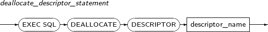 -
구성요소
구성요소 설명 descriptor_name 서술자의 이름이 저장된 호스트 변수 또는 문자열을 명시한다.
호스트 변수는 PIC X(n) 타입 등 문자열을 저장할 수 있는 타입으로 이미 선언되어 있어야 한다.
서술자는 ALLOCATE DESCRIPTOR를 통해 이미 할당되어 있어야 한다. 자세한 내용은 “5.3.3. DESCRIPTOR 이름”을 참고한다.
-
예제
다음은 DEALLOCATE DESCRIPTOR를 사용하는 예이다.
EXEC SQL DEALLOCATE DESSCRIPTOR 'IN-DESC' END-EXEC.
DECLARE CURSOR는 커서를 선언할 때 사용하는 문장이다. 이 문장을 사용해 스크롤 가능 커서(Scrollable Cursor)를 선언할 수도 있다. 커서를 선언할 때는 커서의 이름을 반드시 명시하여야 하며, SELECT 문장과 연관시켜야 한다.
Dynamic SQL 문장에 대한 커서인 경우에는 문장 이름(Statement Name)과 연관시킨다. 이때 문장 이름은 PREPARE를 통해 준비되어 있어야 한다.
DECLARE CURSOR의 세부 내용은 다음과 같다.
-
문법
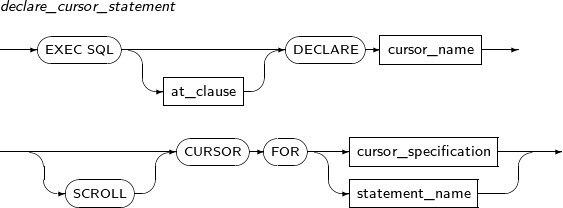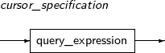 -
구성요소
-
declare_cursor_statement
구성요소 설명 at_clause 문장을 실행할 데이터베이스를 명시한다.
데이터베이스의 이름을 직접 명시할 수도 있고, 데이터베이스의 이름이 저장된 호스트 변수를 명시할 수도 있다. 자세한 내용은 “5.3.1. AT 절”을 참고한다.
cursor_name 커서의 이름을 명시한다. SCROLL 스크롤 가능 커서로 선언한다. cursor_specification 커서로 수행할 문장을 명시한다. statement_name 준비된 문장의 이름을 명시한다. 사용될 문장은 PREPARE를 통해 준비되어 있어야 한다. -
cursor_specification
구성요소 설명 query_expression SELECT 문장을 명시한다. INTO 절을 포함할 수 없다.
-
-
예제
다음은 DECLARE CURSOR를 사용한 예이다.
EXEC SQL DECLARE EMP-CURSOR1 CURSOR FOR SELECT EMPNO, ENAME, SALARY FROM EMP END-EXEC. EXEC SQL DECLARE EMP-CURSOR2 SCROLL CURSOR FOR SELECT EMPNO, ENAME, SALARY FROM EMP END-EXEC. EXEC SQL DECLARE DYN-CUR CURSOR FOR DYN-STMT END-EXEC.
DECLARE DATABASE는 데이터베이스를 선언할 때 사용하는 문장이다.
여러 개의 데이터베이스 접속을 사용할 때 각각의 접속은 데이터베이스의 이름으로 관리된다. DECLARE DATABASE로 선언한 데이터베이스의 이름을 CONNECT 문장이나 COMMIT 문장의 RELEASE를 통해 각각을 구분하여 관리할 수 있다.
DECLARE DATABASE의 세부 내용은 다음과 같다.
-
문법
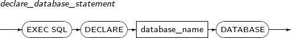 -
구성요소
구성요소 설명 database_name 선언할 데이터베이스 이름을 명시한다. -
예제
다음은 DECLARE DATABASE를 사용한 예이다.
EXEC SQL DECLARE D1 DATABASE END-EXEC. EXEC SQL CONNECT :USERPASS AT D1 END-EXEC.
DELETE는 테이블 또는 뷰에서 로우를 삭제할 때 사용하는 문장이다.
DELETE의 세부 내용은 다음과 같다.
-
문법
DELETE의 문법에 대한 자세한 내용은 "Tibero SQL 참조 안내서"를 참고한다.
-
특권
DELETE를 사용하려면, 대상이 되는 테이블 또는 뷰에 대한 DELETE 객체 특권을 갖고 있거나 DELETE ANY TABLE 시스템 특권을 갖고 있어야 한다.
-
구성요소
구성요소 설명 FOR 입력 배열 변수와 함께 사용될 경우 FOR 절을 이용하여 DELETE를 실행할 입력 배열 변수의 크기를 정할 수 있다.
FOR 절이 포함되어 있지 않거나 실행할 배열의 크기가 입력 배열 변수의 크기보다 크면, 배열 전체에 대하여 DELETE를 실행한다.
CURRENT OF DELETE를 커서와 함께 사용할 수도 있다. 현재 커서가 가리키는 로우를 삭제하려면 WHERE 절에 CURRENT OF와 커서 이름을 포함시킨다. 이때 커서는 닫혀 있지 않아야 한다. -
예제
다음은 DELETE를 사용하는 예이다.
EXEC SQL DELETE FROM EMP END-EXEC. EXEC SQL DELETE FROM EMP WHERE EMPNO = :EMPNO END-EXEC. EXEC SQL FOR :CNT DELETE FROM EMP WHERE EMPNO = :EMPNO END-EXEC. EXEC SQL DELETE FROM EMP WHERE CURRENT OF EMP-CURSOR END-EXEC.위의 예에서 알 수 있듯이 DELETE 문장은 EXEC SQL로 시작하고 END-EXEC.로 끝난다는 것을 제외하면, 일반적인 SQL 문장의 문법과 크게 다르지 않다.
DESCRIBE는 호스트 변수의 서술자를 초기화할 때 사용하는 문장이다. 이 문장에는 Dynamic SQL 문장이 사용되는데, 사용될 문장은 미리 PREPARE를 통해 준비해야 한다.
DESCRIBE의 세부 내용은 다음과 같다.
-
문법
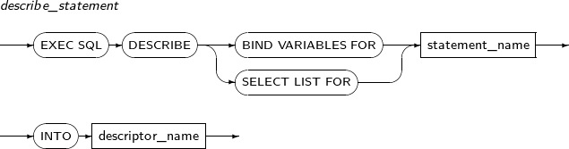 -
구성요소
구성요소 설명 BIND VARIABLES FOR 입력으로 사용되는 호스트 변수의 서술자를 초기화하고, 바인드 변수를 바인딩하기 위해 사용한다. 이 부분을 명시하지 않으면 SELECT LIST FOR가 디폴트이다. SELECT LIST FOR SELECT 문장의 SELECT 리스트의 정보를 위한 서술자를 초기화한다. 명시하지 않을 경우 디폴트이다. statement_name 사용될 문장의 이름을 명시한다. 사용될 문장의 이름은 이미 PREPARE를 통해 준비되어 있어야 한다. descriptor_name 서술자의 이름이 저장된 호스트 변수 또는 문자열을 적는다.
호스트 변수는 PIC X(n) 타입 등 문자열을 저장할 수 있는 타입으로 이미 선언되어 있어야 한다.
서술자는 ALLOCATE DESCRIPTOR를 통해 이미 할당되어 있어야 한다. 자세한 내용은 “5.3.3. DESCRIPTOR 이름”을 참고한다.
-
예제
다음은 DESCRIBE를 사용하는 예이다.
EXEC SQL PREPARE PSTMT FROM :QUERY-STR END-EXEC. EXEC SQL DECLARE EMP-CUR FOR SELECT EMPNO, ENAME, SAL, COMM FROM EMP WHERE DEPTNO = :DEPT-NO END-EXEC. EXEC SQL DESCRIBE BIND VARIABLES FOR PSTMT INTO BIND-DESC END-EXEC. EXEC SQL OPEN EMP-CUR USING BIND-DESC END-EXEC. EXEC SQL DESCRIBE SELECT LIST FOR PSTMT INTO SELECT-DESC END-EXEC. EXEC SQL FETCH EMP-CUR INTO SELECT-DESC END-EXEC.
DESCRIBE DESCRIPTOR는 서술자에 호스트 변수의 정보를 저장할 때 사용하는 문장이다. 단, 이 문장은 ANSI 타입의 Dynamic SQL 문장에만 사용할 수 있다.
DESCRIBE DESCRIPTOR의 세부 내용은 다음과 같다.
-
문법
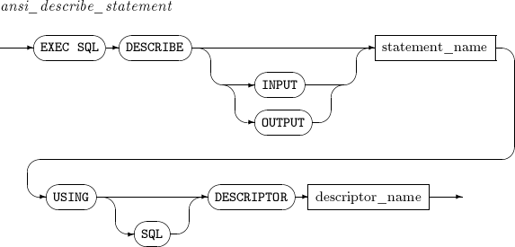 -
구성요소
구성요소 설명 INPUT 서술자가 입력과 출력 중에 어느 곳에 사용될지 지정한다. 생략이 가능하며 기본값은 INPUT이다.
사용자가 바인드 변수에 값을 직접 입력하여, tbESQL/COBOL 라이브러리에서 사용될 수 있도록 한다.
OUTPUT 서술자가 입력과 출력 중에 어느 곳에 사용될지 지정한다. 생략이 가능하며 기본값은 INPUT이다.
사용자가 바인드 변수의 멤버를 통해, tbESQL/COBOL 라이브러리가 동작하면서 저장된 결과 값의 메타데이터(metadata)를 확인하고, 적합한 대응을 할 수 있도록 해준다.
statement_name 사용될 문장의 이름을 명시한다. 사용될 문장의 이름은 이미 PREPARE를 통해 준비되어 있어야 한다. SQL 기존 ESQL 프로그램과의 호환성을 위한 키워드이며 특별한 의미는 없다. descriptor_name 서술자의 이름이 저장된 호스트 변수 또는 문자열을 적는다.
호스트 변수는 PIC X(n) 타입 등 문자열을 저장할 수 있는 타입으로 이미 선언되어 있어야 한다.
서술자는 ALLOCATE DESCRIPTOR를 통해 이미 할당되어 있어야 한다. 자세한 내용은 “5.3.3. DESCRIPTOR 이름”을 참고한다.
-
예제
다음은 DESCRIBE DESCRIPTOR를 사용하는 예이다.
EXEC SQL DESCRIBE INPUT S USING DESCRIPTOR 'IN-DESC' END-EXEC. EXEC SQL DESCRIBE OUTPUT S USING DESCRIPTOR 'OUT-DESC' END-EXEC.
EXECUTE는 Dynamic SQL 문장을 실행할 때 사용하는 문장이다.
EXECUTE의 세부 내용은 다음과 같다.
-
문법
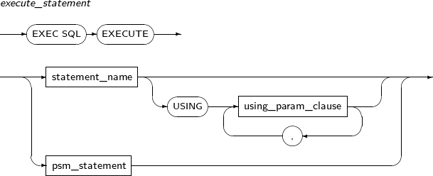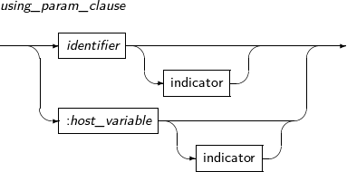 -
구성요소
-
execute_statement
구성요소 설명 statement_name 실행할 문장의 이름을 명시한다. 실행할 문장의 이름은 PREPARE 문장을 통해 이미 준비되어 있어야 한다. USING using_param_clause USING 절을 이용하여 입력 변수를 지정한다. 또는 입력 배열 변수를 사용할 수도 있다. psm_statement 실행할 anonymous psm block 문장의 내용을 서술한다. -
using_param_clause
구성요소 설명 identifier 입력 변수를 정의한 식별자이다. :host_variable 입력 변수를 명시한다. 입력 변수의 개수는 하나 이상이고, 준비된 문장 내에 포함된 입력 변수의 개수와 같아야 한다. indicator 지시자 변수를 명시할 때 사용한다.
-
-
예제
다음은 EXECUTE를 사용하는 예이다.
EXEC SQL EXECUTE SQL-STMT END-EXEC. EXEC SQL EXECUTE SQL-STMT USING :EMPNO, :DEPTNO END-EXEC. EXEC SQL FOR :CNT EXECUTE SQL-STMT USING :EMPNO INDICATOR :EMPNO-IND END-EXEC.
EXECUTE DESCRIPTOR는 Dynamic SQL 문장을 실행할 때 사용하는 문장이다. 단, 이 문장은 ANSI 타입의 Dynamic SQL 문장에만 사용할 수 있다.
EXECUTE DESCRIPTOR의 세부 내용은 다음과 같다.
-
문법
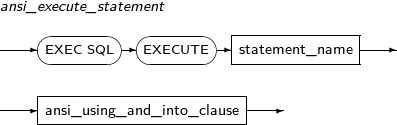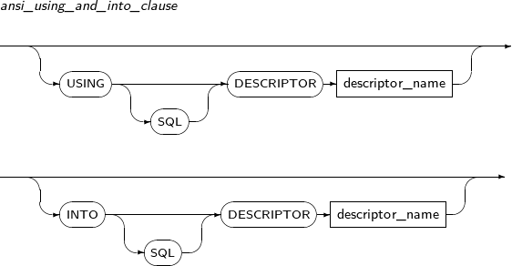 -
구성요소
-
ansi_excute_statement
구성요소 설명 statement_name 서술자의 이름이 저장된 호스트 변수 또는 문자열을 명시한다.
호스트 변수는 PIC X(n) 타입 등 문자열을 저장할 수 있는 타입으로 서술자 이름을 문자열로 가지고 있어야 한다.
-
ansi_using_and_into_clause
구성요소 설명 USING 입력 호스트 변수의 정보를 가지고 있는 지시자를 사용해야 할 경우 명시한다. INTO 문장 수행 결과가 출력 값을 가지고 있을 경우 사용할 지시자를 명시한다. SQL 기존 ESQL 프로그램과의 호환성을 위한 키워드이며 특별한 의미는 없다. descriptor_name 서술자의 이름이 저장된 호스트 변수 또는 문자열을 적는다.
호스트 변수는 PIC X(n) 타입 등 문자열을 저장할 수 있는 타입으로 이미 선언되어 있어야 한다.
서술자는 ALLOCATE DESCRIPTOR를 통해 이미 할당되어 있어야 한다. 자세한 내용은 “5.3.3. DESCRIPTOR 이름”을 참고한다.
-
-
예제
다음은 EXECUTE DESCRIPTOR를 사용하는 예이다.
EXEC SQL EXECUTE S USING DESCRIPTOR 'input_desc' INTO DESCRIPTOR 'output_desc' END-EXEC.
EXECUTE IMMEDIATE는 Dynamic SQL 문장을 준비하지 않고 바로 실행할 때 사용하는 문장이다. 이 문장을 통해 실행할 SQL 문장은 입력 변수가 포함되지 않아야 한다.
EXECUTE IMMEDIATE의 세부 내용은 다음과 같다.
-
문법
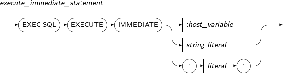 -
구성요소
구성요소 설명 :host_variable 실행할 Dynamic SQL 문장을 호스트 변수를 사용해 명시한다. string literal 실행할 문장을 문자열 리터럴을 사용해 명시한다. 'literal' 실행할 문장을 문자열을 사용해 명시한다. -
예제
다음은 EXECUTE IMMEDIATE를 사용하는 예이다.
EXEC SQL EXECUTE IMMEDIATE :SQL-STMT END-EXEC. EXEC SQL EXECUTE IMMEDIATE Z'SELECT EMPNO, ENAME, SALARY FROM EMP' END-EXEC.
FETCH는 커서가 현재 가리키고 있는 로우의 데이터를 읽어 올 때 사용하는 문장이다.
이 문장을 사용할 때 출력 변수로 배열 변수를 사용할 수 있다. 배열 변수를 사용할 경우 여러 개의 로우 데이터를 동시에 읽어 올 수 있다.
FETCH의 세부 내용은 다음과 같다.
-
문법
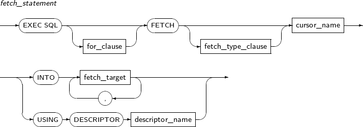 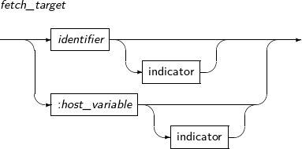
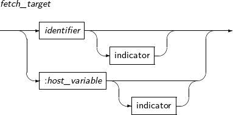 -
구성요소
-
fetch_statement
구성요소 설명 for_clause 입력 배열 변수를 사용할 때 for_clause를 사용해 동시에 읽을 로우의 개수를 지정할 수 있다.
for_clause가 포함되어 있지 않거나, for_clause에 지정된 로우의 개수가 입력 배열 변수의 크기보다 크면, 배열 변수의 크기만큼 로우를 읽는다. 자세한 내용은 “5.3.2. FOR 절”을 참고한다.
fetch_type_clause 스크롤 커서일 경우 스크롤 타입을 명시한다. cursor_name 커서의 이름을 명시한다. 사용될 커서는 열려있어야 한다. fetch_target 결과 값을 저장할 호스트 변수를 명시한다. USING DESCRIPTOR 서술자의 이름을 명시할 경우 서술자의 이름 앞에 붙이는 키워드이다. descriptor_name 서술자의 이름이 저장된 호스트 변수 또는 문자열을 적는다.
호스트 변수는 PIC X(n) 타입 등 문자열을 저장할 수 있는 타입으로 이미 선언되어 있어야 한다.
서술자는 ALLOCATE DESCRIPTOR를 통해 이미 할당되어 있어야 한다. 자세한 내용은 “5.3.3. DESCRIPTOR 이름”을 참고한다.
-
fetch_type_clause
구성요소 설명 NEXT 현재 커서가 가리키고 있는 로우의 다음 로우에 액세스를 한다. PRIOR 옵션과 반대이다. (생략 가능) PRIOR 현재 커서가 가리키고 있는 로우의 이전 로우에 액세스를 한다. NEXT 옵션과 반대이다. FIRST 맨 처음에 위치한 로우에 액세스를 한다. LAST 옵션과 반대이다. LAST 맨 마지막에 위치한 로우에 액세스를 한다. FIRST 옵션과 반대이다. CURRENT 현재 로우에 액세스를 한다. ABSOLUTE position_clause 전체 로우 중에서 position_clause번째 로우에 액세스를 한다. RELATIVE position_clause 현재 커서가 가리키고 있는 로우의 다음 position_clause번째에 위치한 로우에 액세스를 한다. position_clause의 값이 음수라면 커서가 현재 위치에서 앞으로 이동한다. 예를 들어 현재 커서가 8번째 로우를 가리키고 있는데, 'FETCH RELATIVE -3'을 실행한다면 커서는 5번째 로우를 가리키게 된다. -
fetch_target
구성요소 설명 identifier 출력 변수를 정의한 식별자이다. :host_variable 출력 변수를 명시한다. 출력 변수의 개수는 하나 이상이고, 준비된 문장의 결과로 출력될 SELECT 리스트의 컬럼 개수와 동일해야 한다. indicator 지시자 변수를 명시할 때 사용한다.
-
-
예제
다음은 FETCH를 사용하는 예이다.
EXEC SQL FETCH EMP-CURSOR INTO :EMPNO, :ENAME END-EXEC. EXEC SQL FETCH EMP-CURSOR INTO :EMPNO, :ENAME:ENAME-IND END-EXEC. EXEC SQL FOR :CNT FETCH EMP-CURSOR INTO :EMPNO-ARRAY, :ENAME-ARRAY END-EXEC.
FETCH DESCRIPTOR는 커서가 현재 가리키고 있는 로우 데이터를 읽어 올 때 사용하는 문장이다.
FETCH와 거의 동일하게 동작한다. 단, 이 문장은 ANSI 타입의 Dynamic SQL 문장에만 사용할 수 있다.
FETCH DESCRIPTOR의 세부 내용은 다음과 같다.
-
문법
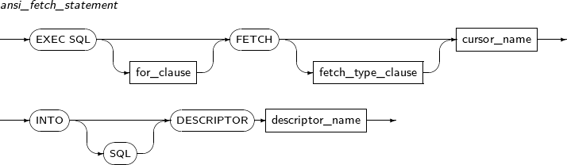 -
구성요소
구성요소 설명 for_clause 입력 배열 변수를 사용할 때 for_clause를 사용해 동시에 읽을 로우의 개수를 지정할 수 있다.
for_clause가 포함되어 있지 않거나, for_clause에 지정된 로우의 개수가 입력 배열 변수의 크기보다 크면, 배열 변수의 크기만큼 로우를 읽는다. 자세한 내용은 “5.3.2. FOR 절”을 참고한다.
fetch_type_clause FETCH의 fetch_type_clause와 동일하다. cursor_name 커서의 이름을 명시한다. 사용될 커서는 열려 있는 커서이어야 한다. SQL 기존 ESQL 프로그램과의 호환성을 위한 키워드이며 특별한 의미는 없다. descriptor_name 서술자의 이름이 저장된 호스트 변수 또는 문자열을 적는다.
호스트 변수는 PIC X(n) 타입 등 문자열을 저장할 수 있는 타입으로 이미 선언되어 있어야 한다.
서술자는 ALLOCATE DESCRIPTOR를 통해 이미 할당되어 있어야 한다. 자세한 내용은 “5.3.3. DESCRIPTOR 이름”을 참고한다.
-
예제
다음은 FETCH DESCRIPTOR를 사용하는 예이다.
EXEC SQL FETCH C1 INTO DESCRIPTOR 'OUT-DESC' END-EXEC.
GET DESCRIPTOR는 지정한 서술자에서 원하는 정보를 가져올 때 사용하는 문장이다. 단, 이 문장은 ANSI 타입의 Dynamic SQL 문장에만 사용할 수 있다.
GET DESCRIPTOR의 세부 내용은 다음과 같다.
-
문법
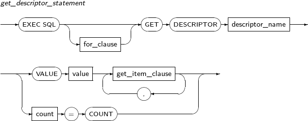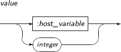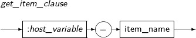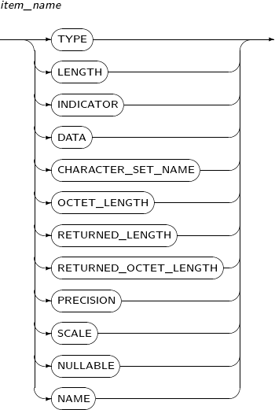 -
구성요소
-
get_descriptor_statement
구성요소 설명 for_clause 입력 배열 변수를 사용할 때 for_clause를 사용해 동시에 읽을 로우의 개수를 지정할 수 있다.
for_clause가 포함되어 있지 않거나, for_clause에 지정된 로우의 개수가 입력 배열 변수의 크기보다 크면, 배열 변수의 크기만큼 로우를 읽는다. 자세한 내용은 “5.3.2. FOR 절”을 참고한다.
descriptor_name 서술자의 이름이 저장된 호스트 변수 또는 문자열을 적는다.
호스트 변수는 PIC X(n) 타입 등 문자열을 저장할 수 있는 타입으로 이미 선언되어 있어야 한다.
서술자는 ALLOCATE DESCRIPTOR를 통해 이미 할당되어 있어야 한다. 자세한 내용은 “5.3.3. DESCRIPTOR 이름”을 참고한다.
VALUE value 정보를 가져올 호스트 변수의 순서를 지정한다. get_item_clause 가져올 정보의 항목과 정보를 저장할 호스트 변수를 명시한다. count 사용된 호스트 변수의 개수를 알고자 할 경우 그 개수를 저장할 호스트 변수를 명시한다. -
value
구성요소 설명 :host_variable 값이 들어 있는 호스트 변수를 사용할 때 명시한다. integer 값을 직접 정수로 입력할 때 사용한다. -
get_item_clause
구성요소 설명 :host_variable 해당 항목을 가져올 호스트 변수를 명시한다. item_name 값을 가져올 구체적인 항목을 명시한다. -
item_name
구성요소 설명 TYPE 데이터의 타입을 가져오고자 할 때 사용한다. LENGTH 데이터의 최대 길이를 가져오고자 할 때 사용한다. INDICATOR 데이터 연관된 지시자 값을 가져오고자 할 때 사용한다. DATA 데이터 값을 가져오고자 할 때 사용한다. CHARACTER_SET_NAME 데이터가 저장된 컬럼의 문자 세트를 가져오고자 할 때 사용한다. OCTET_LENGTH 데이터 길이를 Byte 단위로 환산해 가져오고자 할 때 사용한다. RETURNED_LENGTH FETCH를 할 때 실제로 받아올 데이터 길이를 가져오고자 할 때 사용한다. RETURNED_OCTET_LENGTH FETCH를 할 때 실제로 받아올 데이터 길이를 Byte 단위로 환산해 가져오고자 할 때 사용한다. PRECISION 받아올 데이터의 정밀도를 가져오고자 할 때 사용한다. SCALE 받아올 데이터의 스케일을 가져오고자 할 때 사용한다. NULLABLE 해당 컬럼의 데이터가 NULL이 될 수 있는지 여부를 알고자 할 때 사용한다.
-
값이 1이면, 해당 컬럼은 NULL값을 가질 수 있다.
-
값이 0이면, 해당 컬럼은 NULL값을 가질 수 없는 키이거나 NOT-NULL 제약조건을 가지고 있는 컬럼이다.
NAME 해당 컬럼의 이름을 가져오고자 할 때 사용한다. -
-
-
예제
다음은 GET DESCRIPTOR를 사용하는 예이다.
EXEC SQL GET DESCRIPTOR 'OUT-DESC' :INPUT-CNT = COUNT END-EXEC.
INSERT는 테이블 또는 뷰에 로우를 삽입할 때 사용하는 문장이다. 전체 컬럼 또는 일부 컬럼에 데이터를 삽입할 수 있다. INSERT를 사용할 때 입력 변수로 배열 변수를 사용할 수도 있으며, 지시자 변수를 함께 사용할 수 있다.
또한 입력할 데이터의 값을 사용자가 직접 지정할 수도 있고, 부질의를 통하여 지정할 수도 있다. 부질의를 이용하는 경우 부질의의 결과 로우 모두가 테이블이나 뷰에 삽입된다.
INSERT의 세부 내용은 다음과 같다.
-
문법
INSERT의 문법에 대한 자세한 내용은 "Tibero SQL 참조 안내서"를 참고한다.
-
특권
INSERT를 사용하려면, INSERT의 대상 테이블 또는 뷰에 대하여 INSERT 객체 특권을 갖거나 INSERT ANY TABLE 시스템 특권을 갖고 있어야 한다.
-
구성요소
구성요소 설명 FOR 입력 배열 변수와 함께 사용될 경우 FOR 절을 이용하여 삽입할 데이터의 개수를 지정할 수 있다.
FOR 절이 포함되어 있지 않거나 FOR 절에서 지정한 크기가 배열 입력 변수의 크기보다 크면, 전체 배열 변수에 저장된 데이터가 테이블에 삽입된다.
-
예제
다음은 INSERT를 사용하는 예이다.
EXEC SQL INSERT INTO EMP VALUES (34, ‘James', 45000) END-EXEC. EXEC SQL INSERT INTO EMP (EMPNO, ENAME) VALUES (:EMPNO, :ENAME) END-EXEC. EXEC SQL FOR :CNT INSERT INTO EMP (EMPNO, ENAME) VALUES (:EMPNO-ARRAY,:ENAME-ARRAY :ENAME-IND-ARRAY) END-EXEC. EXEC SQL INSERT INTO HIGH_EMP SELECT * FROM EMP WHERE SALARY > 50000 END-EXEC.위의 예에서 알 수 있듯이 INSERT 문장은 EXEC SQL로 시작하고 END-EXEC.로 끝난다는 것을 제외하면, 일반적인 SQL 문장의 문법과 크게 다르지 않다.
OPEN은 커서를 열 때 사용하는 문장이다. 이 문장을 사용해 열려고 하는 커서는 이미 선언되어 있어야 하며, SELECT 문장과 연관되어 있어야 한다. 커서의 선언은 DECLARE CURSOR를 통하여 실행된다.
커서를 여는 것과 동시에 연관된 SELECT 문장이 실행되며, 커서는 질의 문장이 반환한 결과의 제일 처음에 위치한 로우를 가리킨다. 커서는 SELECT 문장과 연관되기도 하지만, Dynamic SQL 문장과 연관되기도 한다.
OPEN의 세부 내용은 다음과 같다.
-
문법
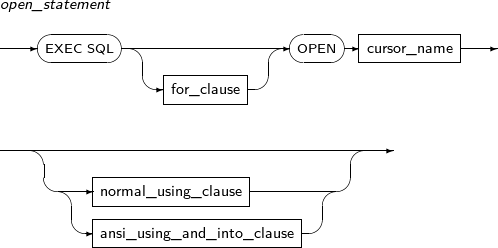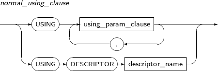 -
구성요소
-
open_statement
구성요소 설명 for_clause 실행 반복 횟수를 지정한다. 자세한 내용은 “5.3.2. FOR 절”을 참고한다. cursor_name 열려고 하는 커서의 이름을 명시한다. normal_using_clause 일반적으로 사용하는 OPEN 문장의 형태이다. ansi_using_and_into_clause 이미 정의된 서술자를 이용한다. ANSI 타입의 Dynamic SQL 문장에만 사용된다. -
normal_using_clause
구성요소 설명 USING 커서가 Dynamic SQL 문장과 연관된 경우 USING 절을 이용하여 SELECT 문장의 입력 변수에 할당할 값을 지정할 수 있다.
입력 변수로 배열 변수를 사용할 수도 있으며, 서술자 변수를 함께 사용할 수도 있다.
using_param_clause 입력 호스트 변수의 정보가 필요할 경우에 사용한다. USING DESCRIPTOR 입력 호스트 변수의 정보를 가져왔던 서술자를 사용할 경우 명시한다. descriptor_name 서술자의 이름이 저장된 호스트 변수 또는 문자열을 적는다.
호스트 변수는 PIC X(n) 타입 등 문자열을 저장할 수 있는 타입으로 이미 선언되어 있어야 한다.
서술자는 ALLOCATE DESCRIPTOR를 통해 이미 할당되어 있어야 한다. 자세한 내용은 “5.3.3. DESCRIPTOR 이름”을 참고한다.
-
ansi_using_and_into_clause
구성요소 설명 USING 입력 호스트 변수의 정보가 들어 있는 서술자 변수가 필요할 경우에 사용한다. INTO 출력 호스트 변수의 정보가 들어 있는 서술자 변수가 필요할 경우에 사용한다. SQL 기존 ESQL 프로그램과의 호환성을 위한 키워드이며 특별한 의미는 없다. descriptor_name 서술자의 이름이 저장된 호스트 변수 또는 문자열을 적는다.
호스트 변수는 PIC X(n) 타입 등 문자열을 저장할 수 있는 타입으로 이미 선언되어 있어야 한다.
서술자는 ALLOCATE DESCRIPTOR를 통해 이미 할당되어 있어야 한다. 자세한 내용은 “5.3.3. DESCRIPTOR 이름”을 참고한다.
-
-
다음은 OPEN을 사용하는 예이다.
EXEC SQL OPEN EMP-CURSOR END-EXEC. EXEC SQL OPEN EMP-CURSOR USING :EMPNO END-EXEC. EXEC SQL FOR :CNT OPEN EMP-CURSOR USING :EMPNO INDICATOR :EMPNO-IND END-EXEC.
PREPARE는 Dynamic SQL 문장을 준비할 때 사용하는 문장이다. 준비된 SQL 문장은 문장의 이름을 통해 서로 식별되며, 이후에 DECLARE CURSOR 또는 EXECUTE에서 참조된다.
SQL 문장을 준비한다는 것은 단지 문장을 파싱(Parsing)한다는 의미일 뿐이며, 문장이 실행된다는 의미는 아니다. 문장이 실제로 실행되는 것은 EXECUTE 문장을 통해서이다. SQL 문장에는 하나 이상의 입력 변수가 포함될 수 있는데, 입력 변수가 포함될 때 입력 변수의 이름은 별다른 의미를 갖지 않으며, tbESQL 프로그램에 미리 선언되어 있을 필요도 없다.
PREPARE의 세부 내용은 다음과 같다.
-
문법
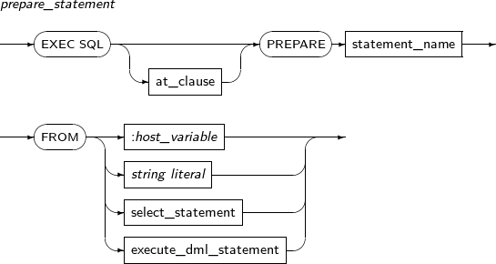 -
구성요소
구성요소 설명 statement_name 준비를 실행할 SQL 문장의 이름을 명시한다. FROM FROM 절 뒤에는 준비할 Dynamic SQL 문장이 온다. SQL 문장 자체가 올 수도 있으며, SQL 문장의 문자열을 저장한 호스트 변수가 올 수도 있다.
SELECT 문장이라면 문장 자체가 올 수 있다.
:host_variable Dynamic SQL 문장을 저장한 호스트 변수를 명시한다. string literal Dynamic SQL 문장을 나타내는 문자열을 명시한다. select_statement SELECT 문장 자체를 명시한다. execute_dml_statement 실행할 INSERT, UPDATE, DELETE 문장 자체를 명시한다. -
예제
다음은 PREPARE를 사용하는 예이다.
EXEC SQL PREPARE EMP-STMT FROM :SQL-STMT END-EXEC. EXEC SQL PREPARE EMP-STMT FROM Z'UPDATE EMP SET SALARY = SALARY * 1.05' END-EXEC. EXEC SQL PREPARE EMP-STMT FROM SELECT EMPNO, ENAME, SALARY FROM EMP WHERE DEPTNO = :DEPTNO END-EXEC.
ROLLBACK은 현재 진행 중인 트랜잭션을 롤백하고 갱신된 모든 내용을 취소할 때 사용하는 문장이다.
롤백을 실행하는 것과 동시에 데이터베이스와의 접속을 끊을 수도 있으며, 미리 설정된 저장점까지 부분 롤백(Partial Rollback)을 수행할 수도 있다.
ROLLBACK의 세부 내용은 다음과 같다.
-
문법
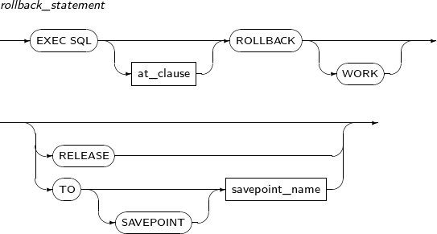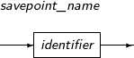 -
구성요소
-
rollback_statement
구성요소 설명 at_clause 문장을 실행할 데이터베이스를 명시한다.
데이터베이스의 이름을 직접 명시할 수도 있고, 데이터베이스의 이름이 저장된 호스트 변수를 명시할 수도 있다. 자세한 내용은 “5.3.1. AT 절”을 참고한다.
WORK 기존 ESQL 프로그램과의 호환성을 위한 키워드이며 특별한 의미는 없다. RELEASE 모든 리소스를 반환하고 데이터베이스와의 접속을 종료한다. TO 특정 저장점까지 부분 롤백을 수행하고자 할 때 명시한다. SAVEPOINT 단지 문법 호환을 위해 지원하는 부분이다. 이 부분의 명시여부는 문장 실행에 어떤 영향도 없다. savepoint_name 부분 롤백을 수행할 저장점의 이름을 명시한다. 저장점은 롤백을 실행하기 전에 프로그램 내에 이미 설정되어 있어야 한다. -
savepoint_name
구성요소 설명 identifier 저장점의 이름을 정의한 식별자이다.
-
-
예제
다음은 ROLLBACK을 사용하는 예이다.
EXEC SQL ROLLBACK END-EXEC. EXEC SQL ROLLBACK TO SAVEPOINT SP1 END-EXEC. EXEC SQL ROLLBACK WORK RELEASE END-EXEC.
SAVEPOINT는 저장점을 설정할 때 사용하는 문장이다. 설정된 저장점은 특정 지점까지 부분 롤백을 하고자 할 때 사용된다.
SAVEPOINT의 세부 내용은 다음과 같다.
-
문법
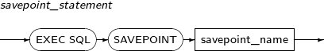 -
구성요소
구성요소 설명 savepoint_name 설정할 저장점에 부여할 이름을 명시한다. -
예제
다음은 SAVEPOINT를 사용하는 예이다.
EXEC SQL SAVEPOINT SP1 END-EXEC.
SELECT는 테이블 또는 뷰에 대해 질의를 수행하고, 질의를 수행한 결과 로우의 각 데이터를 출력 변수에 저장할 때 사용하는 문장이다.
SELECT의 세부 내용은 다음과 같다.
-
문법
SELECT의 문법에 대한 자세한 내용은 "Tibero SQL 참조 안내서"를 참고한다.
-
특권
SELECT 문장을 사용해 질의를 수행하기 위해서는, 대상 테이블에 대한 SELECT 객체 특권이 있거나 SELECT ANY TABLE 시스템 권한을 갖고 있어야 한다.
-
구성요소
구성요소 설명 INTO 질의 결과의 컬럼의 개수는 INTO 절에 포함된 출력 변수의 개수와 같아야 한다.
INTO 절에는 지시자 변수와 함께 배열 출력 변수를 사용할 수 있다. 출력 변수는 모두 스칼라 변수이거나 또는 모두 배열 변수이어야 하며, 이 두 가지가 서로 섞여 있을 수 없다.
WHERE WHERE 절에는 입력 변수를 포함할 수 있다. 이때 지시자 변수와 함께 사용될 수 있다. SELECT 문장 내에서는 배열 입력 변수를 사용할 수 없다. HAVING HAVING 절에는 입력 변수를 포함할 수 있다. 지시자 변수 및 배열 입력 변수와 관련된 내용은 WHERE 절과 동일하다. -
예제
다음은 SELECT를 사용하는 예이다.
EXEC SQL SELECT EMPNO, ENAME, SALARY INTO :EMPNO, :ENAME, :SALARY FROM EMP END-EXEC. EXEC SQL SELECT EMPNO, ENAME, DNAME INTO :EMPNO-ARRAY, :ENAME-ARRAY :ENAME-ARRAY-IND, :DNAME-ARRAY FROM EMP E, DEPT D WHERE E.DEPTNO = D.DEPTNO AND E.DEPTNO = :DEPTNO END-EXEC.위의 예에서 알 수 있듯이 SELECT 문장은 INTO 절을 제외하면, 일반적인 SQL 문장의 문법과 크게 다르지 않다.
SET DESCRIPTOR는 사용자가 입력해야 할 정보를 지정한 서술자에 기록하는 문장이다. 사용자는 이 문장을 통해 데이터 값이나 데이터 값의 길이 등을 지정할 수 있다. 단, 이 문장은 ANSI 타입의 Dynamic SQL 문장에만 사용할 수 있다.
SET DESCRIPTOR의 세부 내용은 다음과 같다.
-
문법
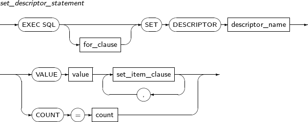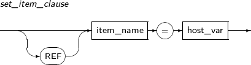 -
구성요소
-
set_descriptor_statement
구성요소 설명 for_clause 반복 횟수를 지정한다. 자세한 내용은 “5.3.2. FOR 절”을 참고한다. descriptor_name 서술자의 이름이 저장된 호스트 변수 또는 문자열을 적는다.
호스트 변수는 PIC X(n) 타입 등 문자열을 저장할 수 있는 타입으로 이미 선언되어 있어야 한다.
서술자는 ALLOCATE DESCRIPTOR를 통해 이미 할당되어 있어야 한다. 자세한 내용은 “5.3.3. DESCRIPTOR 이름”을 참고한다.
VALUE value 몇 번째 출력 호스트 변수인지 명시한다. set_item_clause 출력 호스트 변수의 정보를 입력하기 위해 서술한다. COUNT 출력 호스트 변수의 개수를 받아오기 위해 서술한다. count 출력 호스트 변수의 개수를 받아올 호스트 변수를 명시한다.
-
set_item_clause
구성요소 설명 REF INDICATOR, DATA, RETURNED_LENGTH 항목을 지정할 때만 사용할 수 있는 키워드로 속도와 편리성을 위해 사용한다.
호스트 변수의 값이 아닌 호스트 변수 자체를 지정하며, GET DESCRIPTOR 문장을 따로 실행하지 않아도 FETCH한 후 지정된 항목의 값이 지정된 호스트 변수에 들어간다.
item_name GET DESCRIPTOR와 동일하다. host_var 출력 호스트 변수의 각 정보를 받아올 호스트 변수를 지정한다.
-
-
예제
다음은 SET DESCRIPTOR를 사용하는 예이다.
EXEC SQL SET DESCRIPTOR 'OUTPUT-DESCRIPTOR' VALUE :OCCURS TYPE = :TYPE, LENGTH = :LEN END-EXEC
UPDATE는 테이블 또는 뷰의 컬럼 값을 갱신할 때 사용하는 문장이다. 일부 컬럼 또는 전체 컬럼에 대해 갱신을 수행할 수 있다. 이 문장을 사용할 때 입력 변수로 배열 변수를 사용할 수도 있으며, 지시자 변수를 함께 사용할 수 있다.
UPDATE의 세부 내용은 다음과 같다.
-
문법
UPDATE의 문법에 대한 자세한 내용은 "Tibero SQL 참조 안내서"를 참고한다.
-
특권
UPDATE를 사용해 갱신을 수행하려면, 대상 테이블 또는 뷰에 대한 UPDATE 객체 특권을 갖거나 UPDATE ANY TABLE 시스템 특권을 가지고 있어야 한다.
-
구성요소
구성요소 설명 SET SET 절에 입력 배열 변수가 포함되어 있다면, WHERE 절에도 반드시 같은 크기의 입력 배열 변수가 포함되어야 한다. WHERE WHERE 절에 입력 배열 변수가 포함되어 있다면, SET 절에도 반드시 같은 크기의 입력 배열 변수가 포함되어야 한다.
UPDATE 문장을 커서와 함께 사용할 수도 있다. 현재 커서가 가리키는 로우의 컬럼 값을 갱신하려면 WHERE 절에 CURRENT OF와 커서 이름을 포함시킨다. 커서를 사용하려면 커서는 이미 열려 있는 상태이어야 한다.
FOR 입력 배열 변수를 사용할 때 FOR 절을 이용하여 삽입할 데이터의 개수를 지정할 수 있다.
FOR 절이 포함되어 있지 않거나 FOR 절에서 지정한 개수가 입력 배열 변수의 크기보다 크다면, 전체 배열 변수에 저장된 데이터에 대하여 갱신을 수행한다.
-
예제
다음은 UPDATE를 사용하는 예이다.
EXEC SQL UPDATE EMP SET SALARY = SALARY * 1.05 END-EXEC. EXEC SQL UPDATE EMP SET SALARY = SALARY * :RATIO WHERE DEPTNO = :DEPTNO END-EXEC. EXEC SQL FOR :CNT UPDATE EMP SET SALARY = SALARY * :RATIO-ARRAY WHERE DEPTNO = :DEPTNO-ARRAY END-EXEC. EXEC SQL UPDATE EMP SET SALARY = SALARY * 1.05 WHERE CURRENT OF EMP-CURSOR END-EXEC.위의 예에서 알 수 있듯이 UPDATE 문장은 EXEC SQL로 시작하고 END-EXEC.로 끝난다는 것을 제외하면, 일반적인 SQL 문장의 문법과 크게 다르지 않다.
WHENEVER는 tbESQL/COBOL 프로그램을 실행하는 도중, 예외 상황이 발생했을 경우에 대비하여 수행할 작업을 선언할 때 사용하는 문장이다. 발생 가능한 예외 상황에는 액세스할 로우가 없는 경우와 에러 또는 경고가 발생한 경우가 있다.
WHENEVER 문장의 효과 범위는 WHENEVER 문장이 명시된 위치부터 다음 WHENEVER 문장이 나타날 때까지이다. 하지만 문장이 한 번만 명시되었다면 효과 범위는 WHENEVER 문장이 명시된 위치부터 프로그램의 마지막까지이다.
WHENEVER의 세부 내용은 다음과 같다.
-
문법
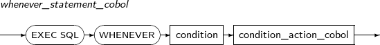 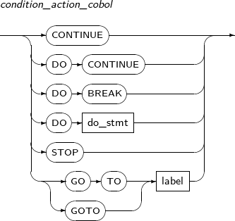
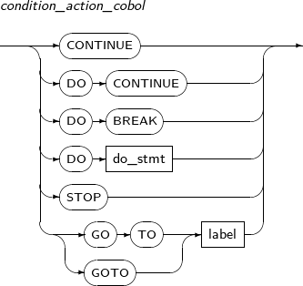 -
구성요소
-
whenever_statement_cobol
구성요소 설명 condition 에러나 경고 또는 결과 로우가 없는 등의 예외 상황을 명시한다. condition_action_cobol 예외 상황이 발생했을 경우 그에 따른 대처 방법을 명시한다. -
condition
구성요소 설명 SQLERROR 에러가 발생한 경우이다. SQLWARNING 경고가 발생한 경우이다. NOT FOUND
또는
NOTFOUND
질의 결과 로우가 없거나 커서를 사용해 읽을 로우가 더 이상 없는 경우이다. -
condition_action_cobol
구성요소 설명 CONTINUE 다음 라인부터 프로그램을 계속 진행한다. DO CONTINUE 루프 내에서 CONTINUE를 실행한다. DO BREAK 루프 내에서 BREAK를 실행한다. DO do_stmt COBOL 프로그래밍 언어로 작성한 에러 처리 문장을 수행한다. STOP 현재 트랜잭션을 롤백하고 프로그램을 정지한다. GOTO label 해당 label이 있는 곳으로 이동하여 프로그램을 진행한다.
-
-
예제
다음은 WHENEVER를 사용하는 예이다.
EXEC SQL WHENEVER NOT FOUND GOTO FETCH-END END-EXEC. EXEC SQL WHENEVER SQLERROR DO PERFORM SQLERROR END-EXEC. EXEC SQL WHENEVER SQLWARNING CONTINUE END-EXEC.